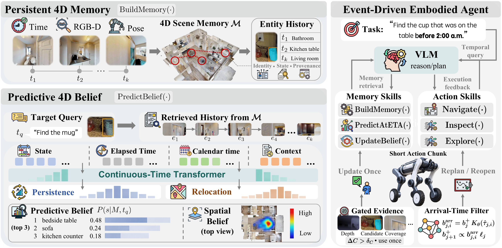

EvolvingWorldNav: Predictive 4D Belief for
Persistent Navigation in Evolving Worlds
HSSD SCENES
Four illustrative navigation episodesHM3D SCENES
Four long-horizon navigation episodesHABITAT-GS SCENES
Four evidence-aware navigation episodes
Abstract
Embodied navigation is typically formulated assuming that maps and memories describe a stationary world. This assumption breaks for long-lived agents, where environments evolve during periods of absence and historical observations can become correct yet decisionally stale. We formulate persistent navigation in evolving worlds, where an agent must infer the current task-relevant state from incomplete temporal experience, act under uncertainty, and update its beliefs through physical evidence.
We introduce EvolvingWorldNav, a predictive embodied-agent framework centered on P4D-Nav, which transforms evidence-grounded 4D memory into an actionable belief over the present world. A continuous-time temporal model captures irregular histories, while a persistence–relocation formulation predicts whether previous states remain valid or where objects are likely to transition. We further introduce P4D-Bench, a 54-scene benchmark with 803.68K tasks spanning state prediction, object navigation, vision-and-language navigation, and embodied question answering.
Method
Our central interface is an action-facing belief over the present. Timestamped RGB-D experience is consolidated into persistent entity histories, encoded with elapsed and calendar time, and factorized into persistence and relocation hypotheses. The navigator uses the belief and map costs to select inspections; visibility-aware Bayesian updates then revise the posterior only when an inspected state should have been observable.


history → current-state belief → plan / act → evidence → memory update
Interactive 4D World Memory Explorer
Explore a real HSSD scene from above. Follow the quadruped’s inspection route and see how new evidence changes an illustrative belief over object locations.
Find the mug
Where is it now?
Follow the belief. Gather new evidence.
- 01 Predict
- 02 Inspect
- 03 Update
- 04 Recover
Object memory
Scene images are captured in Habitat-Sim from HSSD. Object markers, probabilities and inspection outcomes illustrate the method; they are not measured model outputs. Scene provenance ↗
P4D-Bench
P4D-Bench evaluates navigation through changes that happen between observations. Its persistent scene histories preserve temporal continuity, causal observability, physical executability, and controlled dynamics. The latest benchmark release contains 54 HSSD scenes, 90 days per scene, and 803.68K task episodes.

Results
The predictive memory interface improves both first-destination selection and budgeted search. It transfers across FindingDory, GOAT-Bench, P4D-Bench, and real-world LYNX M20 trials.
| Method | FindingDory HL-SR ↑ | GOAT-Bench SR ↑ | P4D-Bench Search SR ↑ | P4D-Bench SPL ↑ |
|---|---|---|---|---|
| Best reported baseline | 52.44 | 29.64 | 81.00 | 66.83 |
| EvolvingWorldNav (ours) | 63.22 ± 3.87 | 35.43 ± 2.16 | 86.18 ± 2.07 | 70.15 ± 1.74 |
Real-world evaluation
On 64 matched LYNX M20 search episodes, EvolvingWorldNav reaches 34.4% First-Go SR, 48.4% Search SR, and 24.3% Recovery SR, while reducing mean travel to 43.8 m.


Resources
BibTeX
@inproceedings{evolvingworldnav2027,
title = {EvolvingWorldNav: Predictive 4D Belief for Persistent Navigation in Evolving Worlds},
author = {EvolvingWorldNav authors},
booktitle = {International Conference on Learning Representations},
year = {2027}
}